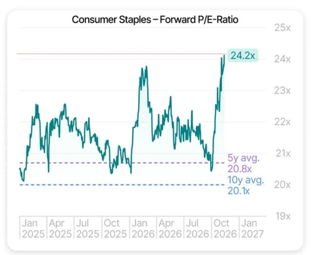
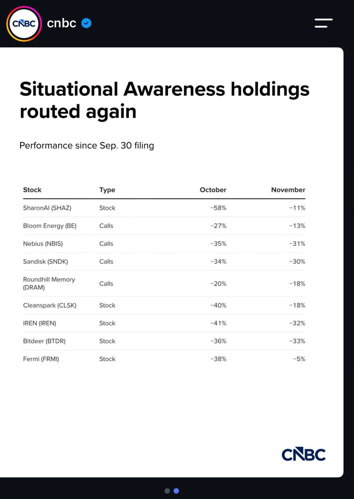

過去 26 小時共 3 則貼文，沒有業配或集數推播。主題有兩個：一是資金逃離 AI 股、擠進 Walmart、Costco、Apple 等「避風港」股，把它們推到歷史高估值；二是 Leopold Aschenbrenner 的 AI 對沖基金 Situational Awareness，第三季重新建立的持股在 10–11 月再度重挫。
近期的美股奇談，Walmart, Costco 等消費股被推到史高估值
科技殺聲震天，錢為了找避風港擠進去 "安全" 的 non ai 股，但這個保費現在很貴
應該是沒有到一些報導寫的 bubble is in safe haven stocks，畢竟這些公司在科技股輪了幾輪後應仍屹立不搖，但支付高額溢價去買平庸的 eps growth 就要想一下，特別是在避險動能結束之後
Apple 被當成 tech Costco 也是一兩年前想不到的劇本就是了，球是圓的
https://www.cnbc.com/2026/11/13/how-apple-became-the-safe-costco-of-tech-bernstein-says-keep-buying.html
https://seekingalpha.com/article/4968707-forget-ai-the-bubble-is-in-safe-haven-stocks-downgrading-schd-to-a-hold
#6559（無文字，緊接 #6558 的圖）：

圖為美股必需消費類股（Consumer Staples）的預估本益比走勢（2025 年初至今）：目前 24.2 倍，為圖中區間最高，高於 5 年平均 20.8 倍與 10 年平均 20.1 倍；2026 年 10 月起從約 20.5 倍急拉上來。
講解
「避險保費」的意思。預估本益比（forward P/E）＝股價 ÷ 未來 12 個月預估每股盈餘。必需消費股（超市、日用品）盈餘成長慢但穩定，歷史上約 20 倍；現在 24 倍，代表投資人願意為「同樣的盈餘」多付約兩成。這多出來的部分就是主持人說的「保費」——買的是 AI 股下跌時的安全感，而不是更快的成長。問題在於：若避險需求消退、資金回流科技股，本益比可能縮回均值，即使公司獲利照常，股價也可能下跌（所謂 multiple compression）。主持人的立場是「不到泡沫，但溢價買平庸 EPS 成長要三思」，這是他的判斷，不是既成事實。
Apple 為何被叫「科技界的 Costco」。CNBC 引述的 Bernstein 報告（維持「優於大盤」、目標價 380 美元）指出：Apple 以 2027 年預估 EPS 計算的本益比約 37 倍，為公司史上最高，相對 S&P 500 約 2 倍也是紀錄；但同組比較對象 Costco 約 46 倍、Walmart 約 39 倍，Microsoft 約 24 倍、Google/Meta 約 17–19 倍。Bernstein 的論點是市場已把 Apple 當「防禦型複利股」定價：資本支出只佔營收約 2%、多數模型放在裝置端跑，較不受 AI 資料中心支出循環影響；約 14 億活躍 iPhone 用戶、服務佔毛利約 4 成、品牌留存率約 9 成、每年約 1,000 億美元的股東回饋。報告也暗示若 AI 交易崩解，Apple 有能力低價收購資產。需注意：Bernstein 說 37 倍「不貴」是單一券商觀點；Apple 預估營收成長約 9%，溢價成立的前提是市場持續把它當必需消費股看待——這正是主持人提醒的風險。（CNBC 原文未直接讀取，以轉述該報告的財經媒體摘要為準。）
Seeking Alpha 那篇。標題主張「泡沫在避險股」並把高股息 ETF SCHD 降評為持有。此文為付費牆後的個人作者文章，本次無法讀到原文，僅能確認標題立場；主持人明確表示不同意「泡沫」這個說法。
（無文字，僅圖片）

CNBC 圖卡「Situational Awareness holdings routed again」，列出該基金 9/30 申報持股自申報後的表現（10 月／11 月）：SharonAI（股票）−58%／−11%、Bloom Energy（買權標的）−27%／−13%、Nebius（買權）−35%／−31%、Sandisk（買權）−34%／−30%、Roundhill Memory ETF DRAM（買權）−20%／−18%、CleanSpark（股票）−40%／−18%、IREN（股票）−41%／−32%、Bitdeer（股票）−36%／−33%、Fermi（股票）−38%／−5%。
講解
這是誰。Situational Awareness 是前 OpenAI 研究員 Leopold Aschenbrenner 的對沖基金，以重押 AI 基礎建設股聞名。據 TechCrunch、WSJ、Axios 等報導，今年夏天其槓桿 AI 部位大虧（有報導稱 7 月投組價值跌約 67%，來源未具名），被迫把大部分公開市場持股賣給 Citadel。
這張圖說了什麼。美國大型機構每季須申報 13F（季末 45 天內），這份 Q3 申報顯示基金在 9/30 前又重建了 AI 部位：加密礦商轉型 AI 算力的 CleanSpark、IREN、Bitdeer，AI 雲端 SharonAI、AI 電力園區 Fermi，以及 Nebius、Sandisk、記憶體 ETF、燃料電池 Bloom Energy 的買權。這些股票正好集中在「AI 資料中心算力／電力／記憶體」這條最熱也最高槓桿的鏈上，10 月 AI 股修正時跌幅全面落在 20–58%。這和上一則呼應：資金撤出的正是這類高 beta AI 股，流向避險股。
要小心的地方。(1) 13F 只是 9/30 當天的快照，基金之後可能已調整，圖中數字是「股價表現」，不等於基金實際損益。(2) 買權（calls）有槓桿，標的跌 30% 時買權可能跌得更多甚至歸零，所以列為 Calls 的那幾檔對基金傷害可能大於數字所示；反過來 13F 也不揭露空頭或避險部位。(3) 不同媒體算法略有差異，例如 Seeking Alpha 寫 SharonAI 10 月跌 55%，CNBC 圖為 58%。主持人沒有附評論，屬純轉貼。
註：今日 GitHub 抓取延後到 11:54 才完成，本次講解於約 12:00 後產出。